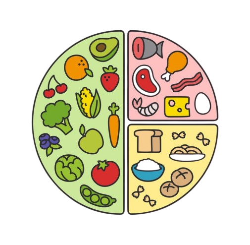

| Día | Desayuno | Ejercicio | Comida | Cena | Horario de sueño |
|---|---|---|---|---|---|
| Fin de semana | Avena con frutas secas | 30 minutos minimo al dia | Carne con arroz blanco | Verduras herbidas o frutas | dormir minimo 6 horas |
| Entre semana | Verdura herbida, carne y fruta | 10 minutos de ejercicio al dia | Algun snack nutritivo | Yogur con frutas secas | Dormir minimo 7 horas |
Plato del buen comer
Plato del buen comer
EL plato del buen comer fue hecho como herraminenta grafica y educativa utilizada en méxico para identificar los alimentos más escenciales para una alimentación sana.

Los grupos alimentacios del plato del buen comer son:
- Verduras y frutas: las verduras son de los mas importante en una dieta
- Cereales y tubérculos: son una muy buena fuente de fibra
- Leguminosas y alimentos de origen animal: una buena fuente de proteina para una buena dieta